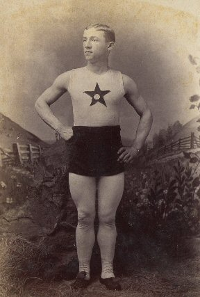

Thursday, February the 25th, 2010
back to: title, date or indexes
Dear Mr Key, writes Dagmar Glossop from Shoeburyness, I recently came upon this terrific photograph at My Ear-Trumpet Has Been Struck By Lightning (where a much, much larger version can be seen), and I fell to wondering if it might be a rare snapshot of fictional athlete Bobnit Tivol. Please enlighten me.

Dear Ms Glossop, I can see immediately why you thought this might be fictional athlete Bobnit Tivol. It's that star on his vest. The whizzo sprinter and pole-vaulter never appeared in public without such a star, on the instructions of his catarrh-wracked coach, Old Halob, for whom it had some kind of mystical quality. Unfortunately, however, the dashing young chap in the photograph is not fictional athlete Bobnit Tivol. I say this with due authority, based on two unarguable points. One, fictional athlete Bobnit Tivol, being fictional, was never snapped by any camera wrought by human hand. Two, it is common knowledge that fictional athlete Bobnit Tivol's athletics kit, as well as being emblazoned with a star, was much baggier than the kit seen here. In fact it was inordinately baggy.